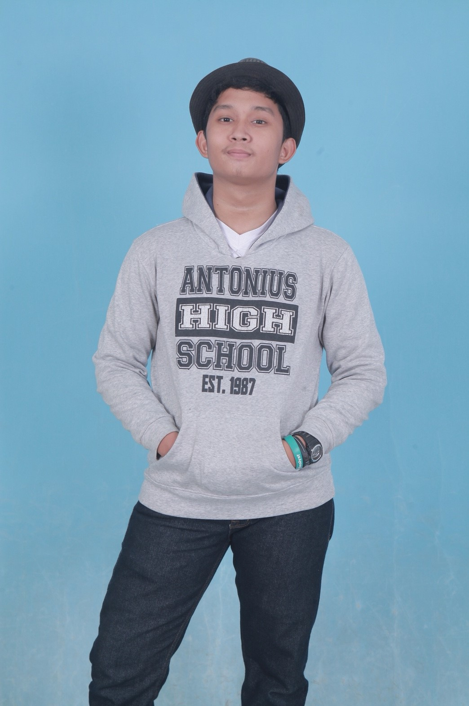

Hello Guys

Nama: Feri Sandrian
Tanggal Lahir: 17 Juni 2001
Hobi: Bermain game & gitar
All About Me
Perkenalkan nama lengkap saya Feri Sandrian biasa dipanggil Feri atau pei. Saya adalah anak ke 2 dari 3 bersaudara. Ayah saya bernama Morlan sitorus, berkerja sebagai pegawai swasta. Ibu saya bernama Indira Ganti Napitupulu, berkerja sebagai ibu rumah tangga. Dan kedua saudara saya yang bernama Vernandes yang sedang bekerja di palembang dan adik saya yang bernama Steven Nicholas Apridel yang masih sekolah di Taman Kanak-kanak Tut Wuri Handayani
Saya pertama kali masuk sekolah di tahun 2004 di Taman Kanak-kanak keluarga bahagaia, kemudian saya melanjutkan ke SDN Cikaret 01 pada tahun 2007-2013 kemudian saya melanjutkannya ke SMPN 2 Cibinong . Dan kemudian melanjutkan sekolah lagi ke SMK-SMAKBogor, di SMK ini saya mengikuti ekstrakulikuler Futsal. Saya mempunyai niat untuk melanjutkan bekerja dari SMK-SMAK Bogor ke PT. Pertambangan.
Saya Mengenal Smakbo dari teman saya yang juga ingin masuk ke Smakbo,dan saya mengikuti Penerimaan jalur Raport tapi sayang gagal dan saya mengikuti jalur test dan saya belajar dengan giat demi masuk Smakbo.Alasan saya masuk smakbo ialah karena saya melihat Smakbo sekolah yang sangat bagus.Setelah lulus dari Smakbo saya mau kerja di pertambangan karena itu yang saya inginkan.